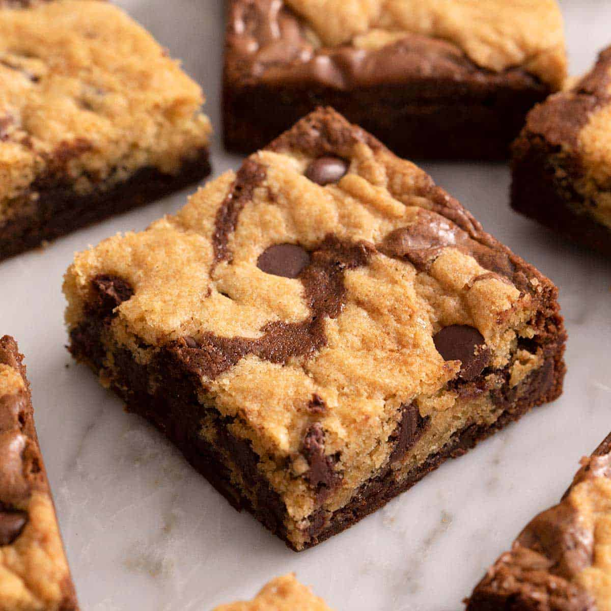

Brookies Recipe
Brookies Recipe
By James Julian, June 15th, 2024

Prep Time: 20 minutes
Cook Time: 30 minutes
Total Time: 50 minutes
Servings: 12
Ingredients
- 2 cup (1 stick) unsalted butter, melted
- 1 cup granulated sugar
- 2 large eggs
- 1 teaspoon vanilla extract
- 1/3 cup unsweetened cocoa powder
- 1/2 cup all-purpose flour
- 1/4 teaspoon salt
- 1/4 teaspoon baking powder
Cooking Instructions
Bronwie Layer
- Make the brownie batter: In a medium bowl, mix together the melted butter, granulated sugar, eggs, and vanilla extract until well combined. Stir in the cocoa powder, flour, salt, and baking powder until the batter is smooth and well combined.
- Pour and spread the brownie batter evenly into the prepared baking pan.
Cookie Layer
- Make the cookie dough: In a large bowl, cream together the softened butter, granulated sugar, and brown sugar until light and fluffy. Beat in the egg and vanilla extract until well combined.
- Mix dry ingredients: In a separate bowl, whisk together the flour, baking soda, and salt. Gradually add the dry ingredients to the wet ingredients, mixing until just combined. Stir in the chocolate chips.
- Layer the cookie dough: Drop spoonfuls of the cookie dough over the brownie batter in the pan. Gently spread the cookie dough to cover the brownie batter evenly.
- Bake: Place the pan in the preheated oven and bake for 25-30 minutes, or until the top is golden brown and a toothpick inserted into the center comes out with a few moist crumbs.
- Cool: Allow the brookies to cool completely in the pan on a wire rack.
- Slice and serve: Once cooled, lift the brookies out of the pan using the parchment paper overhang, slice into squares, and serve.
Return to Menu